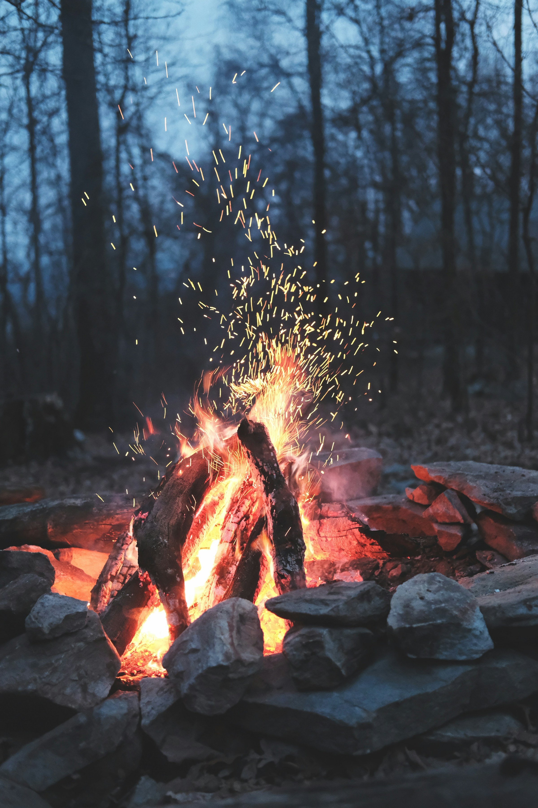
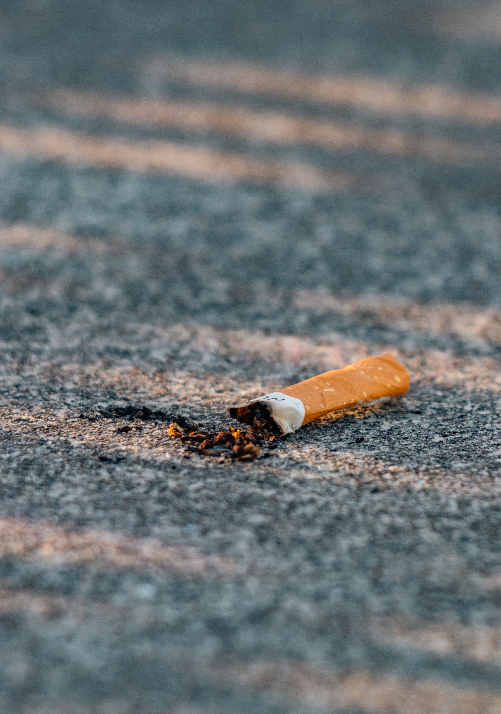
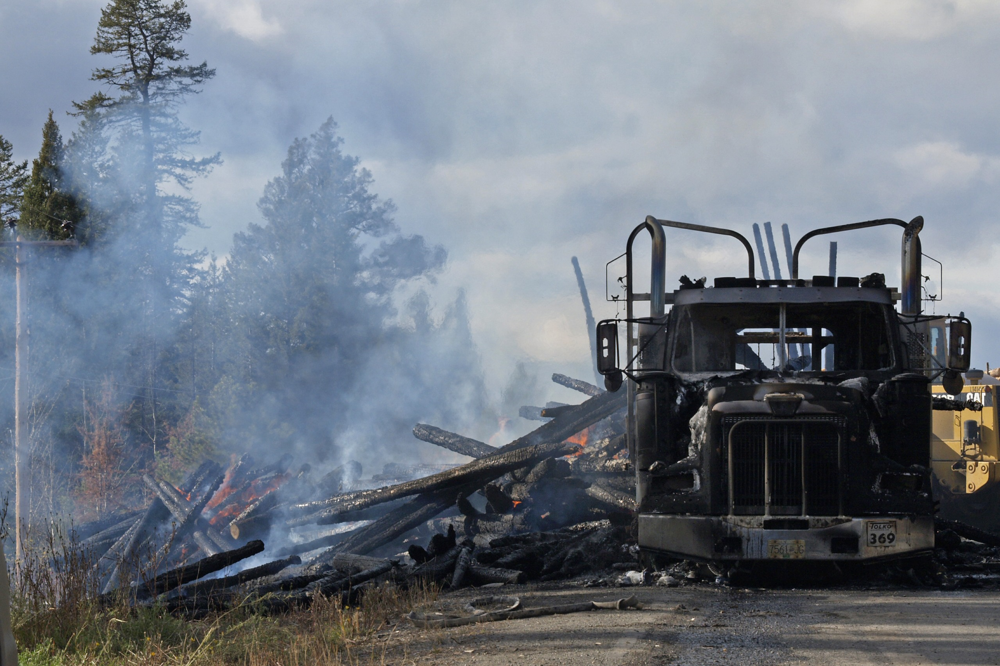

Causas
As queimadas no Brasil têm diversas origens, majoritariamente ligadas
à ação humana:
-
Desmatamento: Frequentemente usado para limpar áreas para agricultura ou pecuária.
-
Práticas agrícolas: Queima de restos de culturas para preparar o solo para novo plantio.
-
Especulação imobiliária: Queimadas para valorizar terras em áreas de expansão urbana.
-
Extração ilegal de madeira: Fogo usado para esconder evidências de desmatamento ilegal.
-
Descuido: Fogueiras mal apagadas, bitucas de cigarro e balões em festas juninas. Consequências das Queimadas




